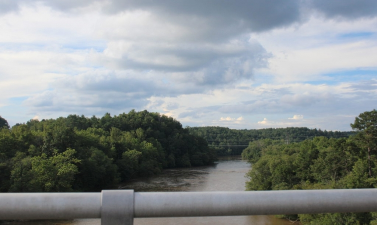

.png)
.PNG)
.PNG)
.PNG)
.PNG)
.PNG)
.JPG)
.JPG)
.PNG)
.PNG)


Time to travel again today friends! Waaay back last summer, we took a long road trip through parts of the beautiful state of North Carolina. Our visits to Asheville and the Biltmore Estate were on the first leg of that journey, and in today’s post we are leaving Asheville and taking a little side trip first to Mount Pisgah.

I’ve written about this area before here. The drive there on the Blue Ridge Parkway with those mountains covered in forests is so scenic, and we always like to take a break at the Pisgah Inn.
We have still not stayed overnight there, but I hope we will some time in the near future. This area is part of the National Park service so you are not going to find a Ritz Carlton there, but I think a suite like the one below would be just fine. 🙂 And at a 5,000 ft. elevation you simply cannot beat the view!

The restaurant is always our reason to stop. 🙂

Here are our dishes for the dinner on this trip. Our daughter had the tasty fish; my husband had the delicious grilled salmon, and I had that wonderful pastry covered chicken pot pie. Of course, we never miss an opportunity to indulge in their dark chocolate French Silk Pie. 🙂

We drove back to Asheville that evening to stay at our hotel on the Biltmore Estate, and the next morning we headed on to Hendersonville, NC.
 Even though there was a misty rain falling, we enjoyed looking around the downtown area.
Even though there was a misty rain falling, we enjoyed looking around the downtown area.
 There were a lot of cute little shops to explore.
There were a lot of cute little shops to explore.

And one HUGE one…the Mast General Store. We visited the original Mast General in Valle Crucis a number of years ago. (You can read about it in the post here.) So I knew it was going to be…um…overwhelming when we went inside.
It is unbelievable how many items they can pack in that place!
Puzzles and games….

Cookware and books…
Candy, clothing, and anything else you can pretty much think of. 🙂 (And this is only one of the several rooms it occupies!)
We bought a few snacks, said goodbye to our quick stop in Hendersonville, and then traveled on down the road a bit more. Hendersonville is definitely worth a longer visit and even an overnight stay, but unfortunately our schedule was too tight to fit it in. (My sister and her husband want to retire there. 🙂 )
So on we drove….

Don’t you love it when the journey is just as beautiful as the destination?

Our next stop was lovely Lake Lure. Some of the movie, Dirty Dancing was filmed there, and they even hold an annual Dirty Dancing Festival each summer to raise money to help fight pancreatic cancer. (More info about the festival can be found here.)
 But the movie locations were not our reason for visiting the lake. I had read a lot about The Lodge on Lake Lure and wanted to see it in person.
But the movie locations were not our reason for visiting the lake. I had read a lot about The Lodge on Lake Lure and wanted to see it in person.
 It is not real easy to get to. The location is off the main road, and you have to drive awhile to find it, but it is certainly gorgeous when you do arrive.
It is not real easy to get to. The location is off the main road, and you have to drive awhile to find it, but it is certainly gorgeous when you do arrive.


I love their green boathouse down at the lake.

And it has a wonderful deck on top!
What a view!

They serve breakfast, lunch, and dinner in the busy seasons.
(Currently they are not serving lunch.)

Here is one of the premium rooms in the lodge. It even has a claw foot bathtub!

After taking a look around, it was time to travel further on towards our destination. We stopped for lunch at the charming, Ni Fen bistro in the town of Shelby, North Carolina.

It is located in a beautiful old building.

Here is part of their menu.

And here are our lunch plates…..a hamburger and fries, their Asian chicken salad, and their quiche of the day with mixed fruit and a green salad. Ni Fen was a great place for lunch, so if you are in the area we highly recommend it!

Our road trip takes us next to another charming town in North Carolina…Wilmington. We stayed there overnight and spent some time exploring the historic area by the Cape Fear River.

That will be the subject of our next post. Hope to see you back for that soon!
Until next time!


.PNG)
Hi Kelly, I really enjoyed your NC roadtrip as I am an NC transplant now living in N Myrtle Beach. Wilmington & Southport (a must see!) are just up the road from us and we love to visit both. Now, I am wondering if you are on your way to Charleston, my favorite city? Happy travels!
———————————————————————
Such a good guess Elaine! New post up on the blog today with details of the hotel where we stayed in Charleston, That will be followed by details of our sightseeing and dining in the city.
Have a good weekend!
Kelly
I am such an NC fan girl! You have covered some of my very favorite spots, and I always love hearing about your travels–and yummy eats. I loved the Mast General Store in Valle Crucis, so I will have to make time to visit the one in Hendersonville if we get back to the area. I haven’t visited Lake Lure, but it’s on my travel bucket list. 🙂 I’m looking forward to your post about Wilmington. One of our twins still lives there, while the other one is now in Raleigh working on her doctorate. We love to visit Wilmington…and also take the ferry across to Southport. It’s a wonderful area with some of the nicest people you’ll ever meet. Great post!
———————————————————————
Thanks Amy! Lucky you to have a child in Wilmington and get to visit there! We have added Southport to our list of places to visit. Thanks for the recommendation!
Kelly
I always enjoy your travels and it is fun to see how you show places in our “back door” that we almost take for granted. We went to a beautiful and fun weekend wedding at Lake Lure a few years ago. Kelly, you might be a mountain girl at heart! I am looking forward to what you found in Wilmington.
Kelly, I am so glad you got to visit my home state of North Carolina. I know how you love the mountain area glad you made it to the coast. If you had let me known I would’ve given you a tour of Historical Salisbury.
Since you went to Wilmington did you make it to Bald Head Island? As always enjoyed your post, Cindy
——————————————————————-
Your home state is wonderful! I’m afraid we did not make it out to Bald Head Island (but I sure would have loved to!) That is going to have to be a trip totally devoted just to it..not a road trip any place else. I have wanted to go there for years!!
Kelly
Kelly,
I always enjoy your great travel posts! ( Actually I enjoy all of your posts!) The next time you visit Hendersonville put Seasons restaurant at Highland Lake Inn in Flat Rock on your list of places to eat. It is wonderful and many of the vegeatables are grown on site in the garden. We especially love the Sunday brunch!
——————————————————————-
This sounds like a wonderful place to visit. We will certainly check it out the next time we are up in the Hendersonville area. Thanks for recommending it to us Pat!
Kelly
Your trips are always so much fun and informative too. Love following along with you.
Our oldest daughter lives south of Wilmington in Southport, did you get there? These quaint towns make me think of Mayberry. Love it.
——————————————————————
No, I sure wish we had gone by there, but there was not enough time to fit in everything. I will make sure we do though when we go back!
Kelly
This all looks so pretty, Kelly! The mountains, the trees, and all the natural elements make me want to go there. That store looks pretty fun too. 😉
——————————————————————-
It was a very fun trip Stacey! I would love to return….especially to the lake! 🙂
Kelly
I sure did enjoy this post. I love Asheville and we went to Lake Lure two summers ago and fell in love with it. We hope to go back this summer. I have read so many good things about Hendersonville and want to plan a trip there in the future too.
So many places to see and so little time to see them!
——————————————————————-
I’m so glad you enjoyed it Lynne! Isn’t Lake Lure just wonderful?! I know what you mean about so many places to visit. NC is a wonderful state to see.
Kelly
Kelly, what a nice armchair visit today to the mts. I love this area of our country. Maybe one day I will get to go for my long anticipated trip! I loved all the pictures and the food shots were so yummy looking!! Thanks for sharing the menu! I think I could spend a whole day in the Mast General Store. A great post and makes me want to travel. We are planning a 5 day trip to the Lexington Ky area the last of April with a stop at Keeneland for a day of horse racing ( which this Ky girl has never done!) Meeting up with several of my Campfire Girls for a reunion!! I am so excited!! Haven’t seen them since middle school and they are now in their early 50’s! Spring time in my home state!! 8 years since I’ve been home! 🤗
———————————————————————
I’m glad you liked it Louvina. It is a beautiful area. I hope you get to explore NC one day soon. Can’t believe you haven’t been back to Kentucky in 8 years! Wow! I know you are going to have a great time when you go in April!!
Kelly
I love seeing all your travel adventures and look forward to escaping to the town of Wilmington! Seriously could see myself living there by the glimpse of these homes!
——————————————————————-
Thank you Anita! Yes, the homes in Wilmington’s historic area were beautiful! 🙂
Kelly
The Mast General Store looks like it could be an entire weekend itself! I love browsing in places like this and it is on my list of places to visit. 😉 My husband has been to lake Lure a couple of times on golf trips and we keep talking about visiting it too. Ha, there seems to be a theme here…just talking about going. I know we’ll have more time in the future to go. 🙂 North Carolina is such a great state to visit. From the western mountains to the ocean. 🙂 Because it borders Virginia we have vacationed here many times. I love Wilmington too! That area down by the river is so pretty. Looking forward to reading about this part of your trip too. 🙂
———————————————————————-
Gina, the Mast General Store did take us a while to go through. I hope you get to go there and to Lake Lure. No fair your husband gets to see it and not you! Loved the riverwalk in Wilmington! It’s coming up next (on Wed. morning. 🙂 )
Kelly
Oh Kelly, I love this part of our country, but rarely get up there. When we lived in Georgia, it was so convenient for a short trip, but now I’m more inclined to hop over to New Orleans or Destin. I need to make a note to take the extra time and get back up in this area, especially during the summer months when it will be so much cooler in the mountains!
—————————————————————–
It is a long way from Fairhope to the mountains of NC for sure. We like to head there in the summer for the very reason you named – the temperature! And if you make it up to Highlands, it is even cooler. Now just go on and plan you a vacation for mid July or August when you know that Alabama heat is torture!
Kelly
I am so glad you shared. It has brought back memories for me. My family has been there many times. And my husband had an aunt that lived in Hendersonville. And if you continue out pass the town of Hendersonville, there is beautiful farmland and yummy apples in the fall. Beautiful area and so relaxing.
——————————————————————-
Oh how sweet! I’m so happy the post brought back good memories for you Kay! We will have to make a return trip in the fall to pick apples. 🙂
Kelly